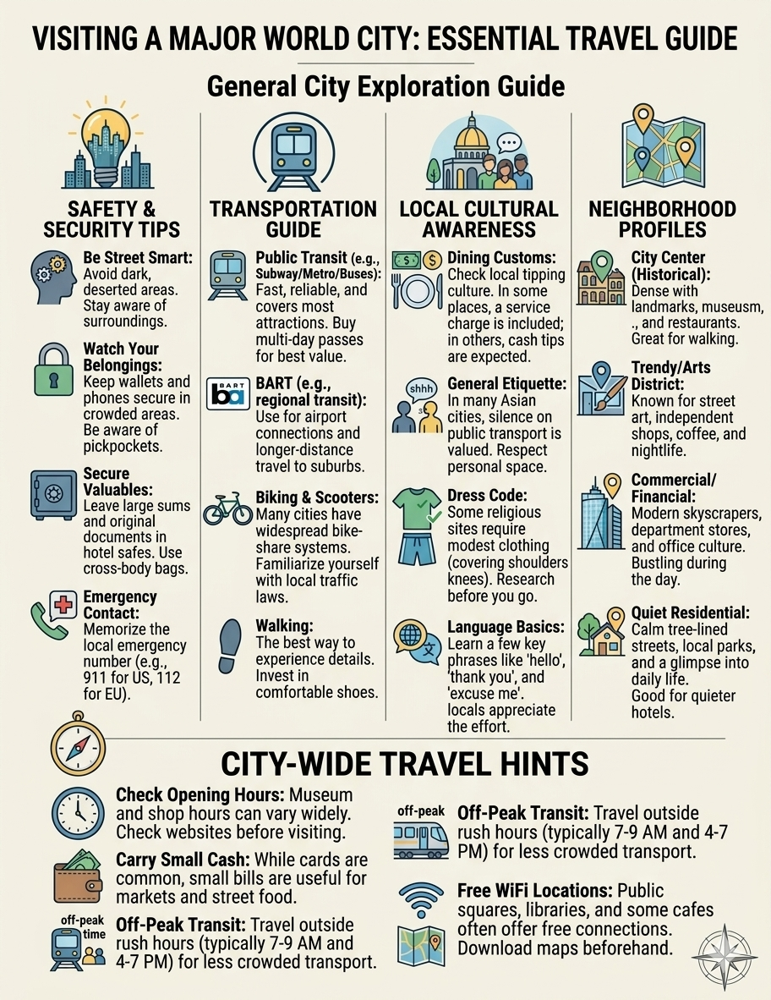

Travel Smarter
Helpful Travel Tips
Planning ahead can make traveling easier and more enjoyable. Travelers should research their destination, weather conditions, transportation, and important local information before leaving. Being prepared can help prevent unnecessary problems during a trip.
Important documents such as identification, tickets, and hotel information should be kept organized and easily accessible. Travelers should also keep an eye on their personal belongings, especially in crowded places. Taking simple safety precautions can make traveling less stressful.
Packing carefully is another important part of preparing for a trip. Travelers should bring appropriate clothing, necessary personal items, and only the luggage they really need. Packing wisely can make transportation easier and leave more time to enjoy the destination.